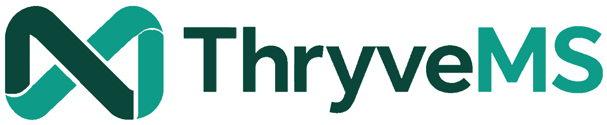

See what needs attention.
Readiness indicators are tied to actual requirements and work — not decorative dashboard cards.

Request a walkthroughTHYNC & THRYVE / SOLUTIONS / THRYVEMS
Bring processes, controlled documents, audits, evidence and follow-through into one clear quality management workspace — with the flexibility to grow as your organization does.
An ISO 9001:2026-focused solution from Thync & Thryve.
Document review Due soon
Corrective action In progress
Audit evidence Pending
Illustrative interface · Synthetic example data
Scroll to explore readiness, controlled documents, audits and corrective actions in one connected workflow.
Readiness indicators are tied to actual requirements and work — not decorative dashboard cards.
Keep ownership, revision, review, approval, publication, and linked source files visible.
Plan, schedule, assign, capture evidence, combine reports, raise findings, and monitor closure.
Connect risks, nonconformities, corrective actions, due dates, owners, and verification in one trail.
Revisions, owners, approvals, and evidence become difficult to trace when documents live in disconnected places.
Findings and follow-ups disappear into messages when responsibility and due dates are not visible in one place.
Teams prepare reactively because audit plans, evidence, findings, and corrective actions are not connected.
Static reports show snapshots. A working QMS should show the source, owner, status, and next action behind every signal.
Start with the essentials. Add the modules and workflow depth that match your actual quality system.
Revisions, owners, review status, approvals, publishing, and linked source documents.
Organize requirements, documents, risks, owners, and evidence around the way work actually flows.
Plans, schedules, checklists, auditor assignments, evidence, reports, and combined findings.
Track risks, nonconformities, corrective actions, owners, due dates, verification, and closure.
Create customer feedback surveys, publish QR access, monitor responses, and flag follow-up.
See audits, reviews, action deadlines, evaluations, and quality events in a shared schedule.
Link supporting evidence to audits, processes, clauses, actions, and document records for traceability.
Surface what is clear, what needs attention, and what is blocking readiness — down to the source.
PLANS & PRICING
For small companies starting ISO 9001.
For companies getting or keeping certification.
For larger companies and groups.
Quoted for your users, sites and add-ons.
Larger team? Ask about Enterprise for unlimited users and sites.
Get started with
Prices in PHP. VAT treatment is confirmed in your quotation.
Pair it with our services. Our consultants can set up ThryveMS during your QMS design, and our trainings get your team ready to use it.
For Microsoft 365 organizations, ThryveMS can be configured so the application manages the process and traceability while controlled files remain in the organization's SharePoint or OneDrive environment.
Map your processes, areas, quality documents, responsibilities, ISO requirements, and current pain points.
Set the structure, terminology, fields, ownership, document links, roles, and the right modules you need first.
Walk the workflow with real users, confirm approval paths, edge cases, security scope, and the information behind each status.
Add deeper workflows, integrations, audit automation, surveys, dashboards, or specialized modules as the QMS matures.
Mini is intentionally focused. It gives teams a strong quality-management foundation first, then allows the implementation to expand only where the organization needs more workflow depth or specialized modules.
Yes. Customization is a core part of the offer. Processes, fields, labels, roles, approvals, dashboards, integrations, and modules can be adapted around the client's quality system.
No. A Microsoft 365 implementation can be designed so controlled documents remain in SharePoint or OneDrive while ThryveMS manages the surrounding process, links, metadata, status, approvals, and traceability.
No software can guarantee certification. ThryveMS is designed to make the management system easier to organize, operate, evidence, monitor, and improve so the organization can manage its own readiness more effectively.
Yes. That is the intended rollout model: begin with the most valuable foundation, validate it with users, then add audit, nonconformity, risk, survey, monitoring, and other custom capabilities as priorities become clear.
Tell us how your current quality process works, where the friction is, and which part you want to improve first. We can map the right ThryveMS starting point around that.